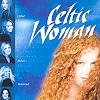

Celtic Lyrics Corner > Shows > Celtic Woman > Harry's Game
|  | Harry's Game |
| Credits : | Brennan & Brennan |
| Appears On : | Celtic Woman (soundtrack) |
| Language : | Gaeilge (Irish Gaelic) |
| Other Versions : | " Theme From Harry's Game " on Clannad's album Magical Ring |
| Lyrics : | English Translation : |
| Imtheochaidh soir is siar | I will go east and go west |
| A dtáinig ariamh an ghealach is an ghrian | From whence came the moon and the sun |
| Fol lol the doh, fol the day | Fol lol the doh, fol the day |
| Fol the doh, fol the day | Fol the doh, fol the day |
| Imtheochaidh an ghealach's an ghrian | The moon and the sun will go |
| An duine óg is a cháil 'na dhiadh | And the young man with his reputation behind him |
| Fol lol the doh, fol the day | Fol lol the doh, fol the day |
| Fol the doh, fol the day | Fol the doh, fol the day |
| Fol lol the doh, fol the day | Fol lol the doh, fol the day |
| Fol the doh, fol the day | Fol the doh, fol the day |
| Imtheochaidh a dtáinig ariamh | I will go wherever he came from |
| An duine óg is a cháil ne dhiadh | The young man with his reputation behind him |
| Fol lol the doh, fol the day | Fol lol the doh, fol the day |
| Fol the doh, fol the day | Fol the doh, fol the day |